Configurações de Produção - Aba Apontamento de Produção
Para acessar as Configurações de produção é necessário ir no menu:
Administração -> Definição -> Produção -> Configurações de produção
Na aba Apont. prod. da tela de Configuração de produção é possível configurar as definições do processo de apontamento de produção.
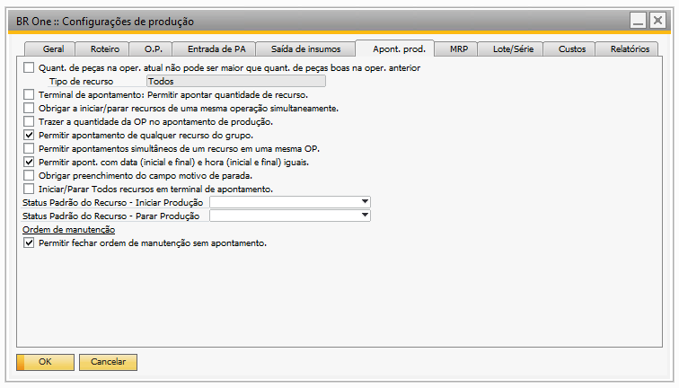{kind=link}
-Quant. de peças na oper. atual não pode ser maior que quant. de peças boas na oper. Anterior
Este parâmetro, quando marcado indica que a quantidade de peças boas apontadas para a operação atual, não pode ser maior do que a quantidade apontada na operação anterior.
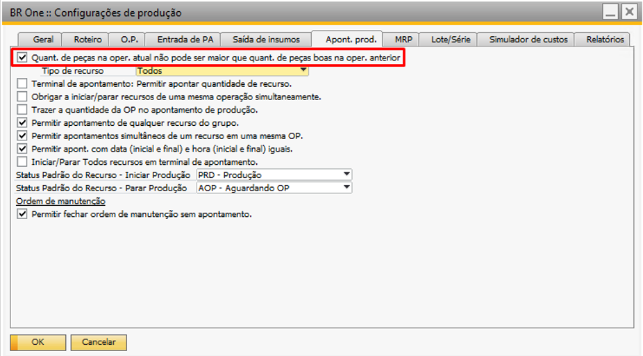{kind=link}
Quando marcado, é possível configurar dois tipos de recursos a serem validados pelo addon, “Todos” ou “Apenas máquinas e ferramentas”.
{kind=link}
Todos:
Quando selecionado “Todos”, todos os tipos de recursos serão validados.
Apenas máquinas e ferramentas:
Quando selecionado “Apenas máquinas e ferramentas” a validação ocorrerá apenas para os recursos do tipo máquinas e ferramentas, desconsiderando assim as operações que tenham apenas recursos do tipo mão-de-obra.
Quando esta opção estiver desmarcada, será possível salvar apontamentos com quantidades diferentes entre operações de uma mesma OP.
Porém, quando o flag estiver marcado e o usuário tente apontar uma quantidade maior para a operação atual da OP que seja menor que a operação anterior, o addon irá retornar a seguinte mensagem de erro:
{kind=link}
BR One :: Total de peças apontadas (x) não pode ser superior que a quantidade de peças boas da operação anterior. Quantidade da operação anterior: x
Caso o usuário não tenha iniciado produção para a primeira operação e queira iniciar para outra operação, a seguinte mensagem será exibida:
{kind=link}
BR One :: Não foi realizado apontamentos para a operação anterior a esta.
Por exemplo, se uma OP tem 3 operações: operação 10 tem máquina, operação 20 tem mão-de-obra e operação 30 tem máquina, ao iniciar produção, deve ser criado um apontamento para a operação 10, e depois, para a 30, desconsiderando assim a 20 que é de mão de obra.
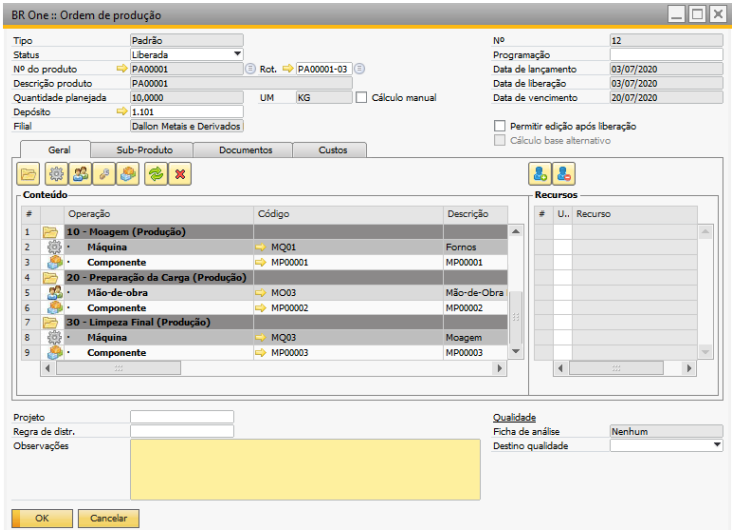 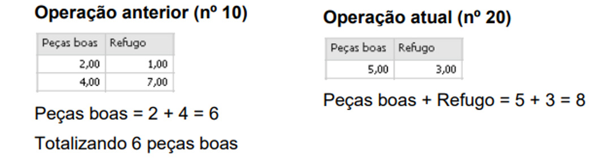{kind=link}
{kind=link}
Para recursos apontados com a mesma data e hora de início/final, a soma das peças boas não será realizada. Para esse cenário, será considerada a maior quantidade entre os recursos com a mesma data e hora de início/final.
Como exemplo, no cenário abaixo tem dois recursos com data/hora iguais e outro recurso com data/hora diferentes, onde o total da soma será de 25 peças boas, calculadas através da maior quantidade dos recursos com data/hora iguais (15) e da quantidade de peças boas do recurso com data/hora distintas (10).
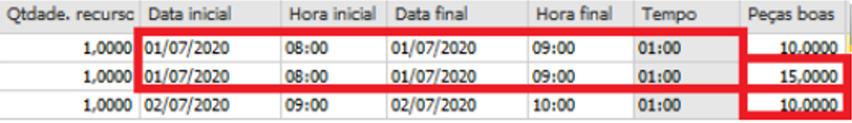{kind=link}
-Terminal de apontamento: Permitir apontar quantidade de recurso.
Esta configuração indica se o campo “Qtdade. Recurso” na tela “Iniciar produção” será visto ou não pelo operador. Com a flag marcada, o campo poderá ser visto e editado.
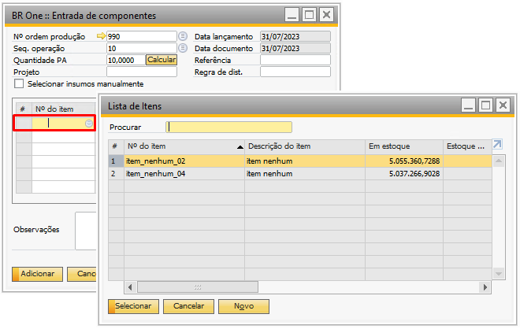{kind=link}
Com a flag desmarcada, o campo não poderá ser visto.
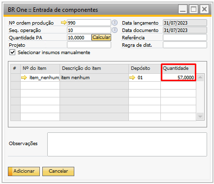{kind=link}
Terminal de apontamento: Permitir apontar quantidade de recurso:
Terminal de apontamento é uma funcionalidade que permite registrar a quantidade de recursos utilizados em uma ordem de produção. Isso é especialmente útil para rastrear o uso de recursos em tempo real e para garantir que os custos de produção sejam calculados com precisão.
-Obrigar a iniciar/parar recursos de uma mesma operação simultaneamente.
Esta configuração obriga o usuário a sempre iniciar ou parar apontamentos de tempo para todos os recursos da mesma operação simultaneamente, ou seja, não é possível iniciar apontamentos individuais para os recursos de uma mesma operação, sempre serão feitos todos juntos. Apenas serão desconsiderados os recursos alternativos.
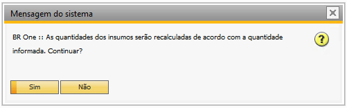{kind=link}
As telas influenciadas por esta configuração são:
Apontamento de produção
Iniciar produção (terminal de apontamento)
Parar produção (terminal de apontamento)
Parada de múltiplos recursos
Apontamento de produção
Quando a configuração estiver ativa, será necessário realizar o apontamento para todos os recursos da operação na mesma data/hora de início/fim e com as mesmas quantidades de peças boas e refugo.
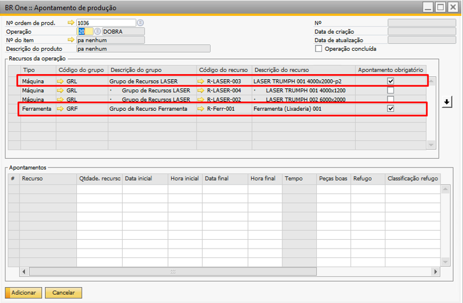{kind=link}
Caso não seja feito o apontamento para todos os recursos que tiverem a flag Apontamento obrigatório marcada, será exibida uma mensagem de erro como no exemplo abaixo:
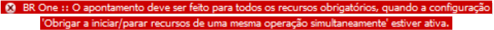 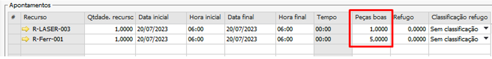{kind=link}
{kind=link}
BR One :: O apontamento deve ser feito para todos os recursos obrigatórios, quando a configuração “Obrigar a iniciar/parar recursos de uma mesma operação simultaneamente” estiver ativa.
Caso seja apontada uma quantidade de peças boas e refugo diferente entre os recursos de mesmo início e fim, será exibida uma mensagem de erro conforme o exemplo:
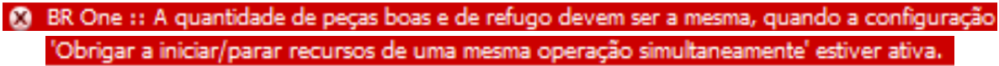 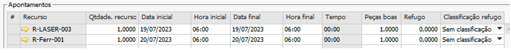 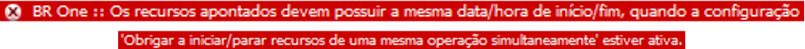{kind=link}
{kind=link}
{kind=link}
BR One :: A quantidade de peças boas e de refugo devem ser a mesma, quando a configuração “Obrigar a iniciar/parar recursos de uma mesma operação simultaneamente” estiver ativa.
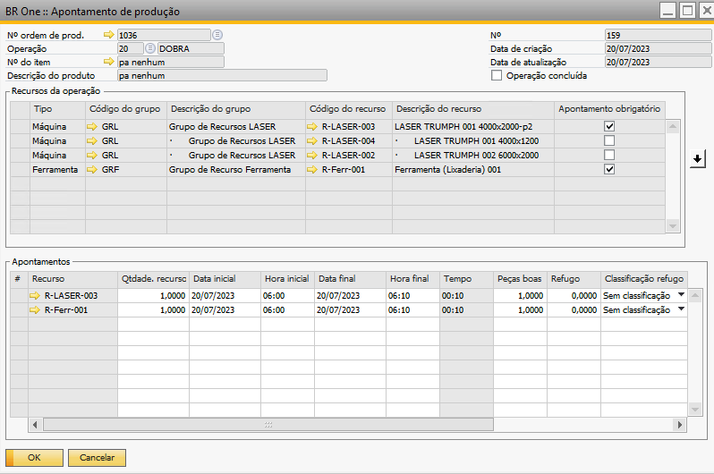 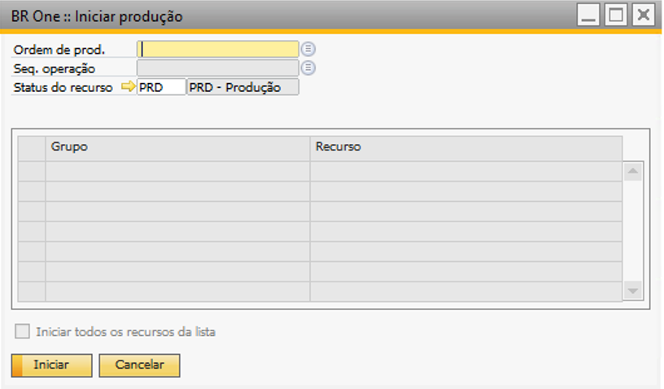 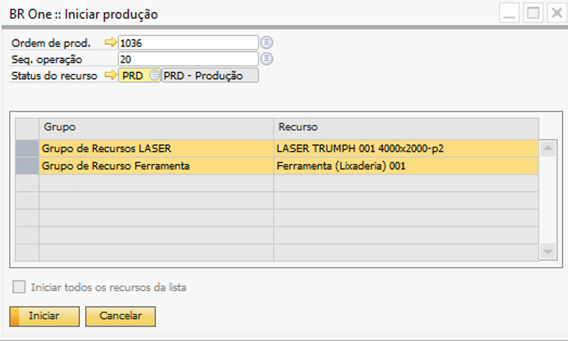{kind=link}
{kind=link}
{kind=link}
BR One :: Os recursos apontados devem possuir a mesma data/hora de início/fim, quando a configuração “Obrigar a iniciar/parar recursos de uma mesma operação simultaneamente” estiver ativa.
Ao preencher tudo corretamente, será possível adicionar o apontamento de produção normalmente.
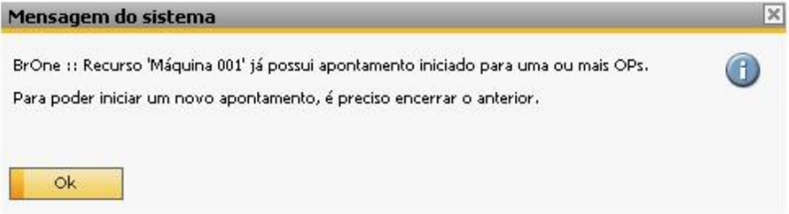{kind=link}
Iniciar produção (terminal de apontamento)
Quando a configuração estiver ativa, só serão exibidos os campos “Ordem de prod.”, “Seq. Operação” e “Status do recurso”. O parâmetro “Iniciar todos os recursos da lista” não será editável.
{kind=link}
Ao selecionar o nº da ordem e a operação, a grid será preenchida com todos os recursos desta operação e irá selecionar todos eles, não permitindo que o usuário mude a seleção.
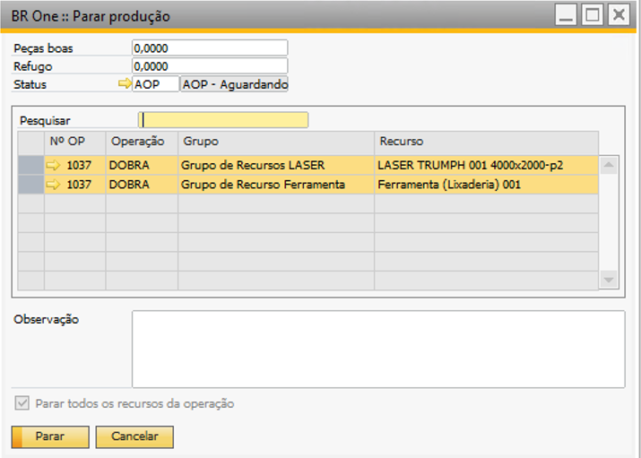{kind=link}
Caso alguns dos recursos da lista já estejam sendo usados em outra ordem de produção, será exibido um alerta para o usuário e o processo será abortado, não iniciando nenhum recurso. Em seguida, será exibida uma mensagem de erro:
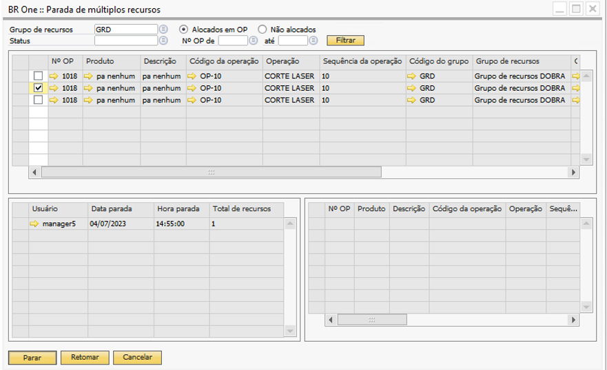{kind=link}
BR One :: Recurso “x” já possui apontamento iniciado para uma ou mais OPs. Para poder iniciar um novo apontamento, é preciso encerrar o anterior.
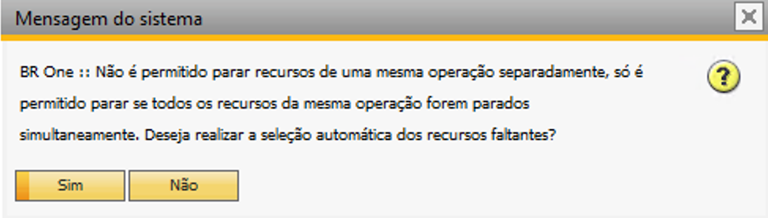{kind=link}
BR One :: Operação não realizada, encerre os apontamentos anteriores e repita a operação.
Parar produção (terminal de apontamento)
Quando a configuração estiver ativa, a flag “Parar todos os recursos da operação” não será editável. Quando o usuário selecionar uma linha, todos os recursos da mesma operação da linha selecionada também serão selecionados.
Não será possível selecionar apenas 1 recurso de uma operação, o usuário será obrigado a parar todos os recursos de uma mesma operação.
{kind=link}
Parada de múltiplos recursos
Quando a configuração estiver ativa, o usuário só poderá parar os recursos se todos da mesma OP e operação estiverem selecionados.
Caso o usuário não selecione todos os recursos da operação, conforme o exemplo abaixo, uma mensagem será exibida, perguntando se ele deseja selecionar todos os recursos da mesma operação.
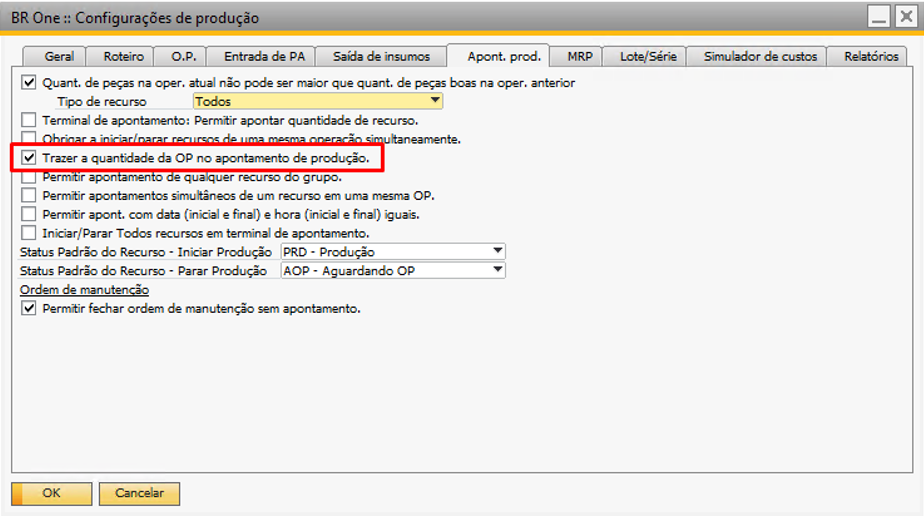{kind=link}
{kind=link}
BR One :: Não é permitido parar recursos de uma mesma operação separadamente, só é permitido parar se todos os recursos da mesma operação forem parados simultaneamente. Deseja realizar a seleção automática dos recursos faltantes?
Se for selecionado Não, será exibida a seguinte mensagem:
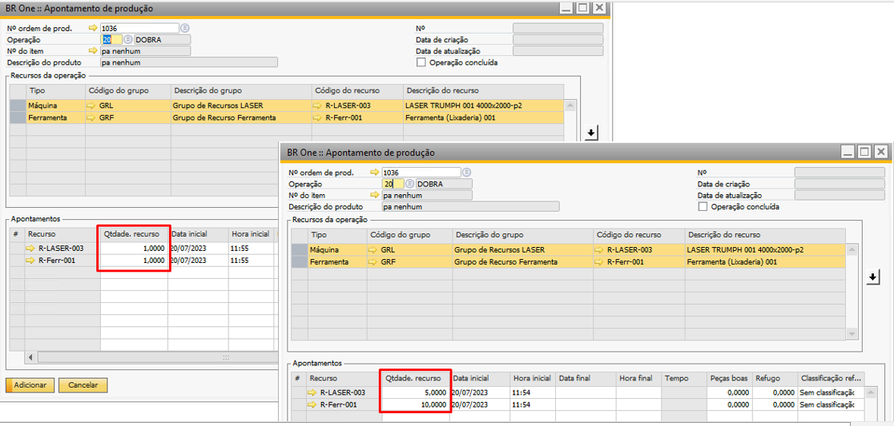{kind=link}
BR One :: Selecione todos os recursos de uma mesma operação para poder para-los.
Se o usuário selecionar Sim, todos os recursos faltantes serão selecionados e a seguinte mensagem será exibida:

BR One :: Linhas selecionadas com sucesso.
-Trazer a quantidade da OP no apontamento de produção.
Este parâmetro indica se o addon deverá trazer a quantidade do recurso disponível na ordem de produção, para a operação selecionada no apontamento de produção.

Quando esta opção estiver selecionada, o campo “Qtdade. Recurso” na tela de Apontamento de produção será carregado com a quantidade do grupo de recurso na Ordem de Produção. Caso a opção não seja selecionada, será carregado o valor 1 no campo “Qtdade. Recurso”.

-Permitir apontamentos de qualquer recurso do grupo
Quando essa opção estiver selecionada, nas telas “Apontamento de produção”, “Iniciar produção”, é permitido selecionar outros recursos do mesmo grupo de recurso apontado na Ordem de produção.

Esses recursos ficarão como alternativos aos que foram previstos anteriormente na ordem de produção.


Ao iniciar o apontamento pelo Terminal e marcar a opção “Iniciar todos os recursos da lista”, apenas os recursos originais da OP serão selecionados.

Na tela “Relatório de apontamentos”, que pode ser acessada através do menu de contexto, as horas apontadas de recursos não previstos na OP também serão consideradas.
Na imagem abaixo, foram apontados dois recursos do mesmo grupo de recursos, sendo que um deles é alternativo. A soma dos tempos apontados deu 2 minutos.

No relatório de apontamentos (imagem abaixo), os apontamentos são agrupados por grupo de recursos, sendo que o tempo apontado é a soma do tempo de todos os recursos do mesmo grupo.

-Permitir apontamentos simultâneos de um recurso em uma mesma OP.
Este parâmetro indica se é possível apontar recursos simultaneamente para uma mesma ordem de produção.

Quando esse flag estiver desmarcado, se houver o mesmo recurso na mesma OP, porém em operações diferentes, ao apontar horas e não finalizar para uma operação, e após, tentar apontar para outra operação, a seguinte mensagem será exibida:

BR One :: Recurso “x” já possui apontamento iniciado para uma ou mais OPs. Para poder iniciar um novo apontamento, é preciso encerrar o anterior.
Caso esteja marcado, será possível iniciar um novo apontamento, mesmo que já possua apontamentos abertos para o recurso, numa mesma OP.
-Permitir apont. com data (inicial e final) e hora (inicial e final) iguais.
Este parâmetro indica se o addon irá permitir que o usuário adicione apontamentos de produção com o mesmo intervalo de data/tempo inicial é igual ao intervalo de data/tempo final.

Quando o parâmetro está marcado, é possível adicionar um apontamento de produção onde o intervalo de data/tempo inicial é igual ao intervalo de data/tempo final utilizando o mesmo recurso.

Quando parâmetro está desmarcado e o usuário tente adicionar um apontamento de produção conforme acima, o addon irá retornar a seguinte mensagem de erro:

BR One :: Valor da data/hora de início deve ser menor que o valor da data/hora final.
Obrigar preenchimento do campo motivo de parada:
No SAP Business One, é possível configurar campos para que o preenchimento seja obrigatório. Isso pode ser feito através de uma “trava” ou regra de validação que você cria no sistema
-Iniciar/Parar Todos recursos em terminal de apontamento
Parâmetro indica se o addon deve iniciar ou parar todos os recursos utilizando a tela de “Terminal de Apontamento”.

Quando esse flag estiver marcado, ao abrir a tela “Iniciar produção” do “Terminal de Apontamento”, a flag “Iniciar todos os recursos da lista” virá marcada, e, ao selecionar uma OP e a sequência da operação, todos os recursos serão carregados e selecionados.

Na tela “Parar produção”, a flag “Parar todos os recursos da operação” virá desmarcada.

Caso usuário tente marcar ele, a seguinte mensagem será exibida:

BR One :: Selecione uma linha.
Após selecionar uma linha, a seguinte mensagem será exibida:
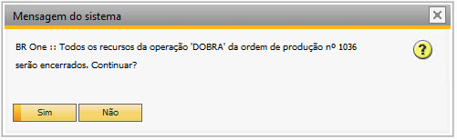{kind=link}
BR One :: Todos os recursos da operação “x” da ordem de produção nº x serão encerrados. Continuar?
Ao clicar em “Sim”, todas as linhas referentes à ordem de produção serão selecionadas e o parâmetro será marcado.

Ao clicar em “Não”, apenas a linha selecionada será utilizada.
-Status Padrão do Recurso - Iniciar Produção
Nesse campo será configurado o status padrão do recurso ao iniciar a produção no terminal de apontamento.

As opções disponíveis para o parâmetro, serão um reflexo do que está cadastrado na tela de “Status de recurso” e sua “Categoria”.
No exemplo abaixo, existem dois status cadastrados:
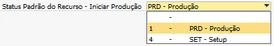{kind=link}
Portanto, ao iniciar a produção pelo “Terminal de apontamento”, o status carregado será o mesmo configurado no parâmetro.

-Status Padrão do Recurso - Parar Produção
Nesse campo será configurado o status padrão do recurso ao parar a produção no terminal de apontamento.

As opções disponíveis para o parâmetro, serão um reflexo do que está cadastrado na tela de “Status de recurso” e sua “Categoria”.
No exemplo abaixo, existem dois status cadastrados:
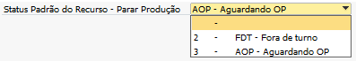{kind=link}
Portanto, ao iniciar a produção pelo “Terminal de apontamento”, o status carregado será o mesmo configurado no parâmetro.

-Permitir fechar ordem de manutenção sem apontamento
Este parâmetro indica se o addon permitirá fechar a ordem de manutenção sem apontamento de ordem de manutenção.

A opção “Permitir fechar ordem de manutenção sem apontamento”, quando marcada deverá permitir o fechamento da ordem de manutenção/metrologia sem registro de apontamento de ordem de manutenção.
Caso contrário, deverá ter registro de apontamentos para que a ordem de manutenção/metrologia possa ser fechada.
Caso o usuário tente fechar uma Ordem de Manutenção/metrologia sem apontamento, a seguinte mensagem será exibida:

BR One :: Não é permitido fechar uma ordem de manutenção sem apontamento.